Lean Inception do Projeto
1. Introdução
Lean Inception é uma metodologia colaborativa de uma semana para definir e alinhar a visão do Produto Mínimo Viável (MVP) de um software. Ela envolve atividades para entender as necessidades dos usuários, priorizar funcionalidades e criar um roadmap inicial. Essa metodologia foi popularizada por Paulo Caroli no livro "Lean Inception: How to Align People and Build the Right Product".
Este documento tem o objetivo de apresentar o resultado do Lean Inception que foi desenvolvido pelo grupo para o projeto MeasureSoftGram. O trabalho realizado tem como base o Lean Inception desenvolvido no semestre anterior pelo outro grupo responsável pelo MeasureSoftGram.
2. Etapas da Lean Inception
2.1 Visão do Produto
A visão do produto é primeira etapa da Lean Inception, ela tem o objetivo de definir de forma clara e concisa a essência, o propósito, o diferencial e o valor de negócio do produto, sendo fundamental para orientar as próximas etapas.
A Visão de Produto do MeasureSoftGram:
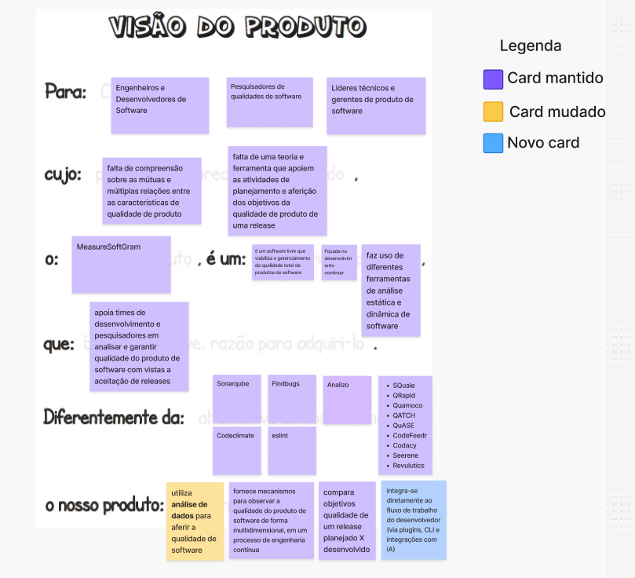
{kind=link}
2.2 O Produto É - NÃO É - FAZ - NÃO FAZ
O ENFN (É - Não é - Faz - Não faz) tem o objetivo de através de quatro perguntas definir características do produto tanto de forma positiva (é, faz), quanto de forma negativa (não é, não faz). Essa tarefa é fundamental para trazer uma visão mais clara sobre as características do desse produto.
O ENFN do MeasureSoftGram:
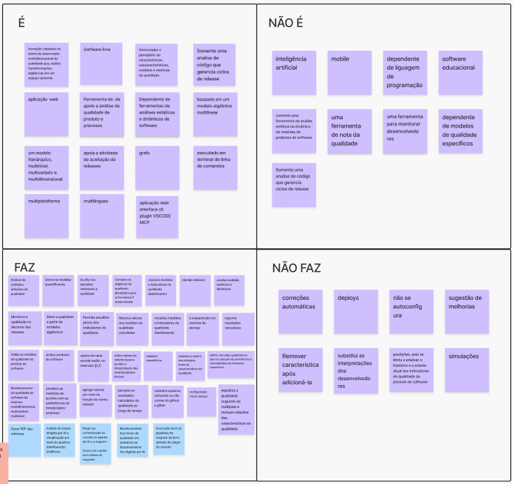
{kind=link}
2.3 Objetivos do Produto
A definição dos objetivos do produto é fundamental as etapas seguintes, sendo um importante referencial para a compreensão do negócio. Nesta etapa é importante levantar vários pontos de vistas, discutir e definir os aspéctos relevantes para o entendimento dos objetivos do produto.
Objetivos do Produto MeasureSoftGram:
{kind=link}
2.4 Personas
A definição de personas é importante para entender o produto a partir do entendimento dos usuários. Nesta etapa o grupo define quais são os perfis dos usuários do produto e listam características relevantes de cada perfil de usuário. A partir dessa definição, é possível analisar cada aspecto do produto levando em conta necessidades específicas de cada grupo de usuário.
As personas definidas para o MeasureSoftGram:
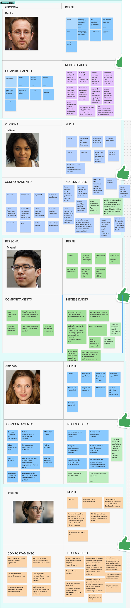
{kind=link}
2.5 Jornadas do Usuário
A jornada do usuário é importante pra entender qual o caminho que aquele usuário vai percorrer durante o uso da aplicação. Nesta etapa, é definido o caminho do usuário levando em conta o perfil de cada um baseado nas personas definidas na etapa anterior.
A jornada dos usuários do MeasureSoftGram:
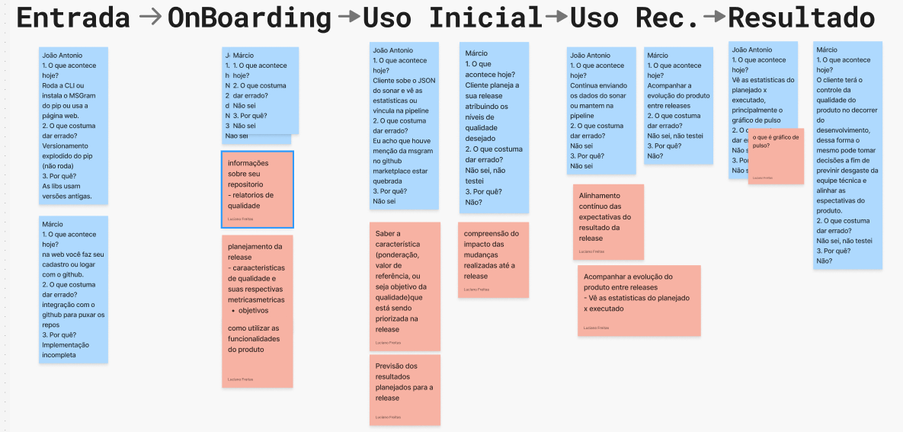
{kind=link}
2.6 Brainstorm de Funcionalidades
O Brainstorm de Funcionalidades é útil para propor novas funcionalidades para o produto. Durante esta etapa, a equipe deve sugerir o máximo possível de funcionalidades, sem qualquer julgamentos em relação às ideias propostas, para que seja levantado os mais variados cenários possíveis.
O Brainstorm de Funcionalidades do MeasureSoftGram:
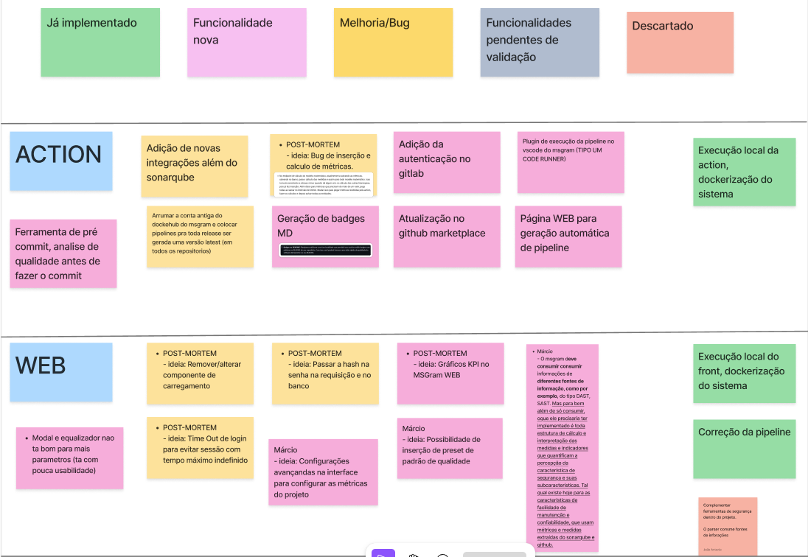 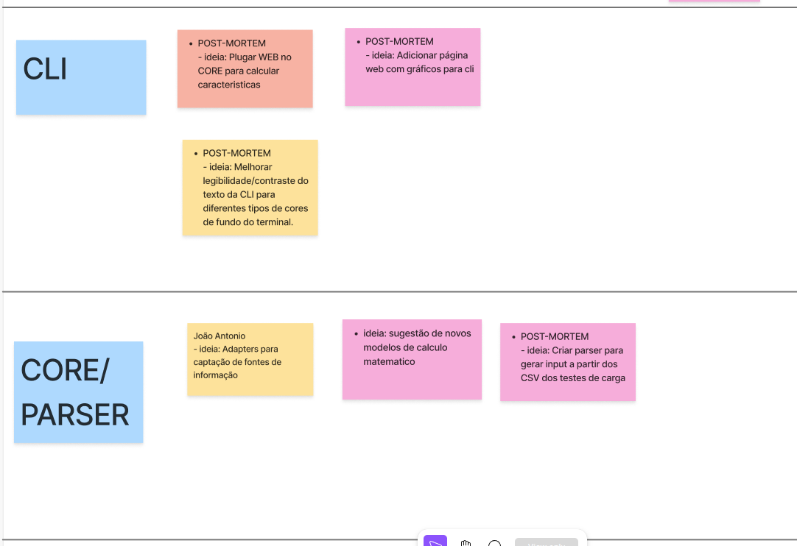 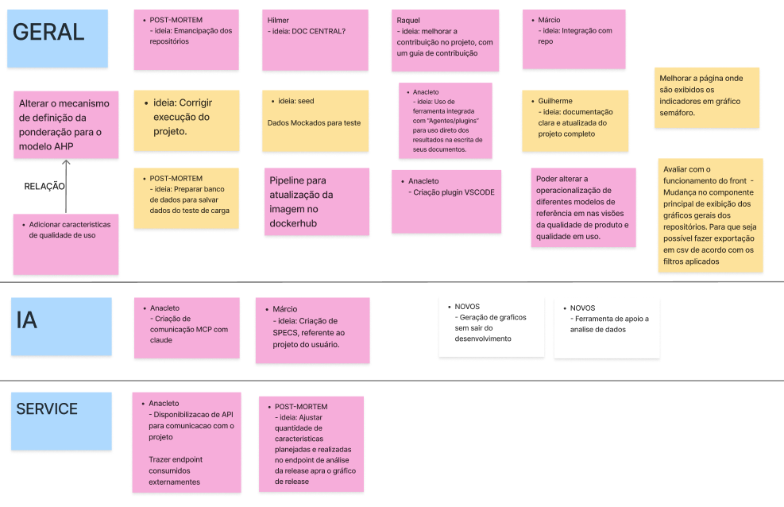
{kind=link}
{kind=link}
{kind=link}
2.7 Revisão Técnica, de Negócio e de UX
Depois de identificar as funcionalidades, é necessário reavaliá-las, normalizá-las e eliminar aquelas que não são viáveis. Analisamos cada funcionalidade considerando o esforço, o valor para o negócio, a experiência dos usuários e o nível de confiança. O esforço, o valor para o negócio e o valor para a experiência do usuário são classificados em uma escala de um a três. O nível de confiança é classificado como baixo, médio ou alto, resultando em uma codificação por cores (vermelho, amarelo ou verde).
Revisão Técnica do MeasureSoftGram:
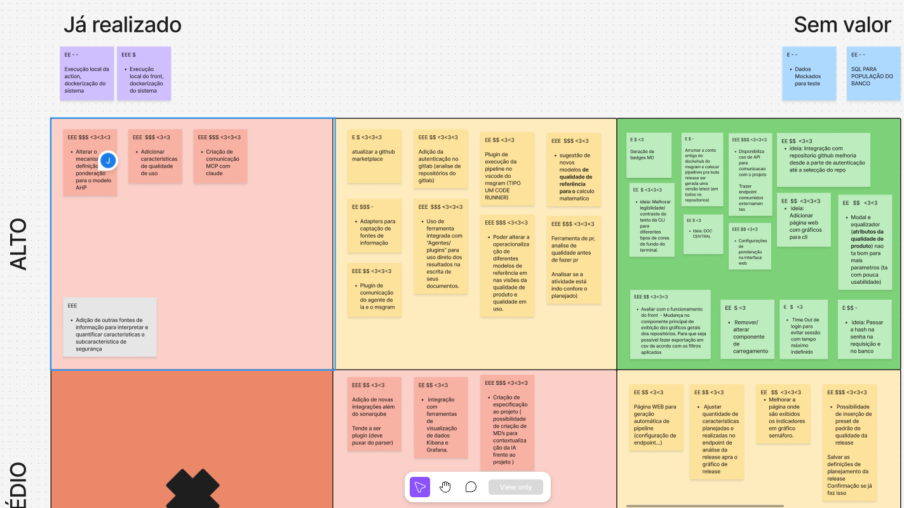 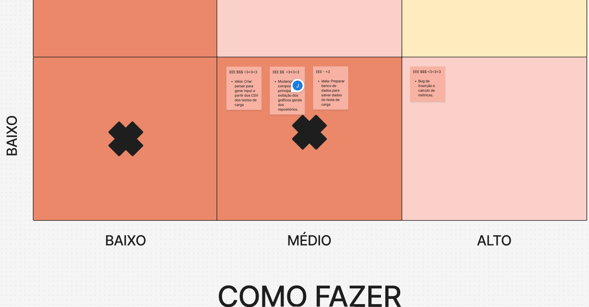
{kind=link}
{kind=link}
2.8 Sequenciador
O sequenciador é importante para priorizar as funcionalidades previamente identificadas e avaliadas. Para isso, o grupo deve organizar de forma sequencial as funcionalidades, de modo a indicar o que será implementado no MVP e o que será acrescentado posteriormente.
O Sequenciador do MeasureSoftGram:
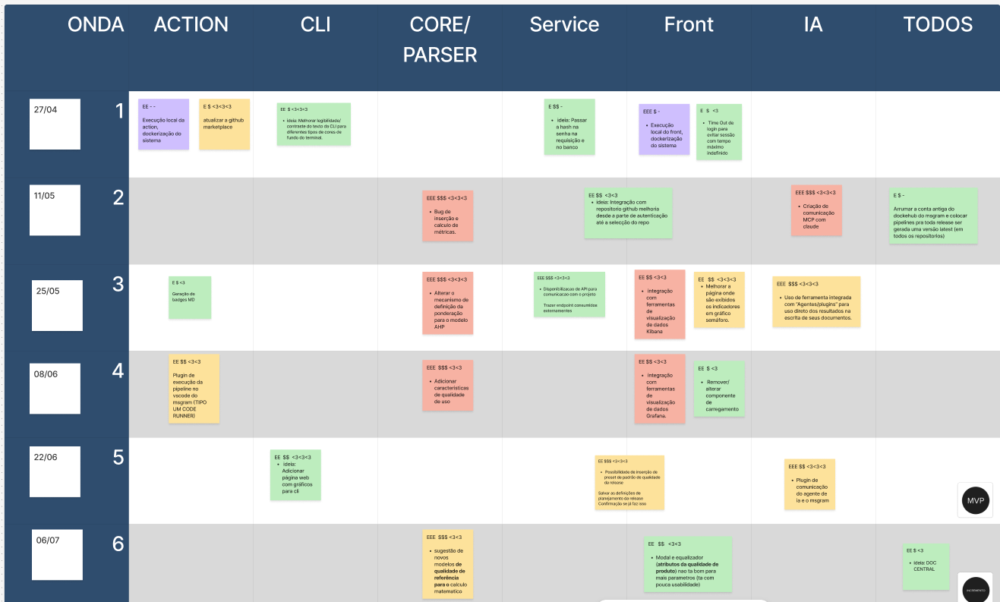
{kind=link}
2.9 Calculando Esforço, Tempo e Custo
O calculo de esforço é importante para o entendimento de quanto tempo durará a construção de cada onda e do MVP consequentemente.
Passos seguidos para as estimativas: 1 - Destrinchar as funcionalidades em pedaços menores (histórias de usuário); 2 - Dimensionar as histórias em tamanhos de esforço (P, M, G e GG); 3 - Estimar o tempo de 3 a 4 histórias em cada tamanho de esforço, em dias (1 dia = 1 jornada de trabalho = 8 horas); 4 - Fazer uma média de tempo de esforço para cada tamanho; 5 - Obter a média de tempo para cada onda.
As Estimativas do MeasureSoftGram:
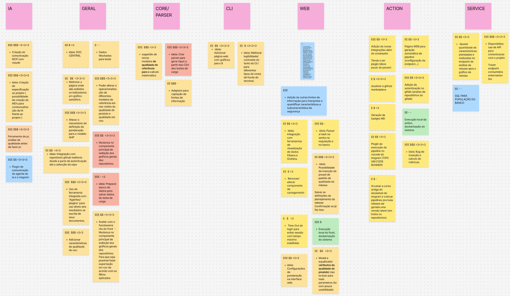
{kind=link}
2.10 Canvas MVP
O Canvas MVP é importante para definir o escopo do mínimo produto viável (MVP).O Canvas MVP é segmentado em sete blocos, cada um exigindo a resposta a uma pergunta específica, sendo elas: 1 - Proposta do MVP 2 - Personas segmentadas 3 - Jornadas 4 - Funcionalidades 5 - Resultado esperado 6 - Métricas para validar as hipóteses do negócio 7 - Custo e Cronograma
O Canvas MVP do MeasureSoftGram:
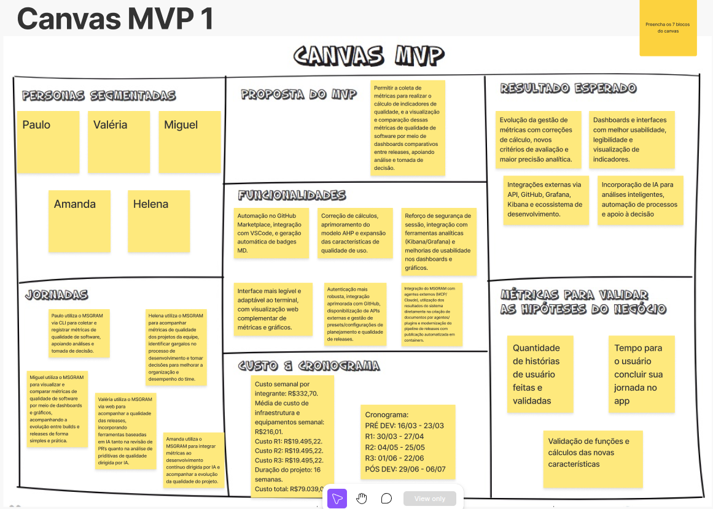
{kind=link}
3. Lean Inception Completa
A Lean Inception Completa da equipe pode ser encontrada no Figma abaixo (board 2026.1, revalidado com o cliente em aula 25/04/2026):
Board original 2024.1 (histórico): https://www.figma.com/board/2NiX8V1jx1s6AGbbWErOuk/Visao-do-Produto-2024.1?node-id=0-1&t=pdAnMVHOTPkQuXp6-0
4. Referências
Paulo Caroli: Lean Inception: How to Align People and Build the Right Product. 1 ed. São Paulo.
5. Versionamento do Documento
| Data | Versão | Descrição | Autor |
|---|---|---|---|
| 01/08/2024 | 1.0 | Versão inicial completa do documento | Thiago Siqueira Gomes |
| 27/04/2026 | 1.1 | Revisão R1 2026.1: produto e Canvas MVP revalidados com o cliente em aula 25/04/2026 e iframe Figma migrado pro board 2026.1. Os prints (visão, ENFN, objetivos, personas, jornadas, sequenciador, Canvas MVP) ainda refletem decisões do semestre 2024.2 — atualização visual em curso, rastreada na issue de Lean Inception 2026.1 (a abrir). | Giovanni A. C. Giampauli |
| 27/04/2026 | 1.2 | Imagens do Lean Inception 2026.1 | Luis Henrique |